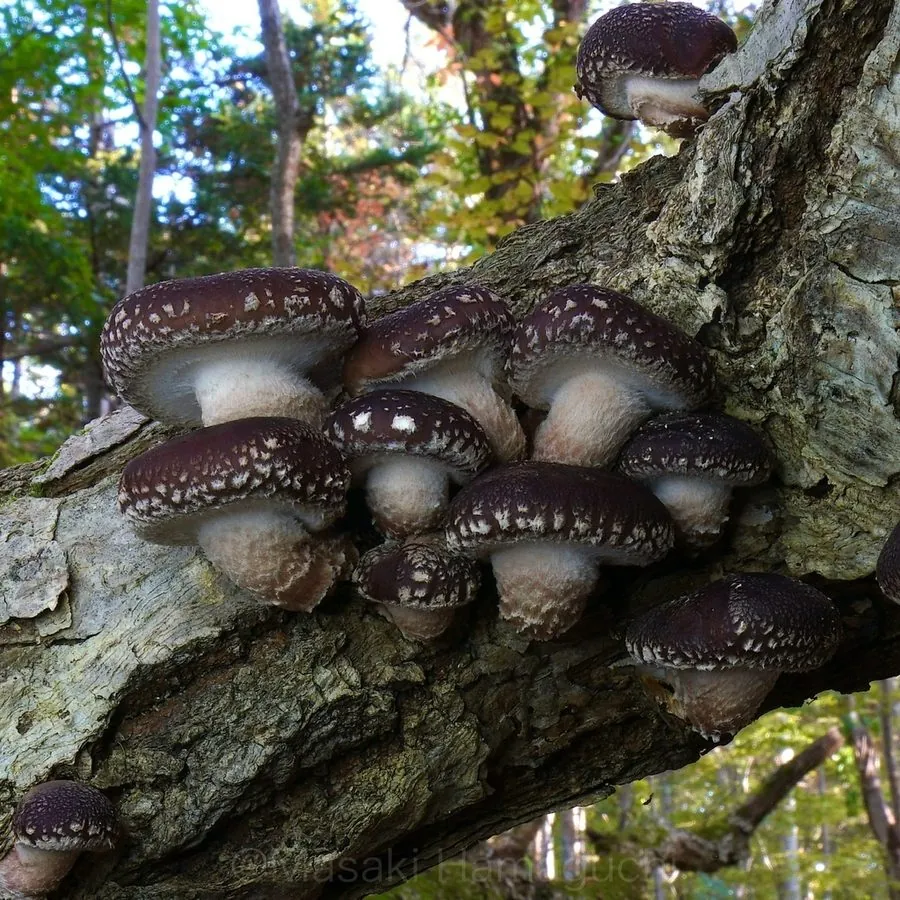

真菌 · 真菌界
香菇 Lentinula edodes

香菇是著名的食用菌，菌盖褐色、有鳞片，香气浓郁，可鲜食、干制，是中国栽培历史最久的食用菌之一。
- 分类
- 门担子菌门纲伞菌纲目伞菌目科小皮伞科属香菇属
- 栖息环境
- 阔叶树枯倒木与人工菌袋上，喜温暖湿润、散射光环境
- 地理分布
- 原产中国与东亚，现中国、日本、韩国等地广泛栽培
- 保护级别
- 暂无评估（栽培食用菌）
物种志
香菇是担子菌门伞菌目的木腐真菌，由菌丝体和子实体组成。子实体由菌盖、菌柄和菌褶构成：菌盖初期半球形，后平展，直径 5–12 cm，表面淡褐至深褐色，常有白色龟裂状鳞片（花菇）；菌肉白色，厚实；菌褶白色至淡黄色，密集排列；菌柄中生或偏生，圆柱形，内实。孢子印白色。
香菇野生于阔叶树的枯倒木上，主要分解栎树、槭树等木材中的木质素和纤维素。中国是最早栽培香菇的国家，浙江庆元、福建古田等地有悠久的栽培传统，传统方法用段木接种，现代多用木屑菌袋栽培。香菇香气独特，干香菇的香气更浓，富含蛋白质、多糖和多种氨基酸，其中香菇多糖被认为有免疫调节作用；鲜菇可炒食、炖汤，干菇是重要的出口农产品。
形态与习性
- 菌盖直径 5–12 cm，淡褐至深褐色
- 菌褶白色至淡黄色，密集排列
- 菌柄圆柱形，中生或偏生，内实
- 孢子印白色
- 栽培木屑菌袋或段木栽培
- 采收期菌盖八分开、尚未完全平展时
- 主要成分香菇多糖、蛋白质与多种氨基酸
趣味知识
- 干香菇的香气比鲜香菇浓，因为干燥过程中会生成更多香味物质。
- 菌盖上的白色裂纹是干燥时表皮开裂形成的，裂纹多的称“花菇”。
- 香菇属于木腐菌，靠分解枯木中的木质素和纤维素获取营养。